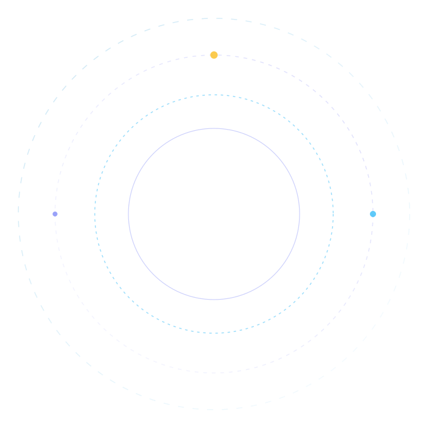
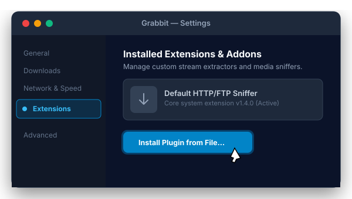
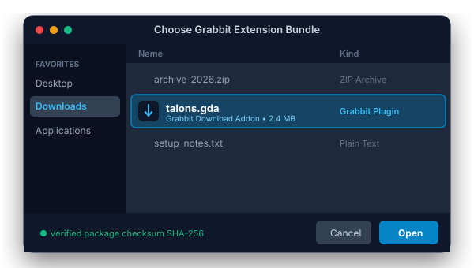
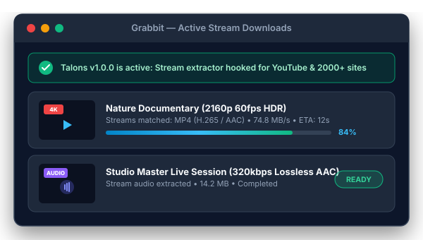

Talons addon for Grabbit
Universal high-speed stream extractor for YouTube and 2,000+ popular media platforms. Native to macOS Apple Silicon.
★★★★★ 4.9 / 5 Write a review

How to run addon
Follow this quick guide to install and enable the Talons add-on inside Grabbit, unlocking 4K/8K video extraction and high-speed multi-part media downloads.
-
1
Open Grabbit Settings
Launch Grabbit on your Mac. Press Cmd + , or click the gear icon in the toolbar, navigate to the Extensions tab on the left sidebar, and click "Install Plugin from File...".
If you don't have Grabbit yet, download it from the official Grabbit release page.

-
2
Select the talons.gda bundle
In the macOS file dialog that appears, locate and select the downloaded
talons.gdafile from your Downloads folder.Grabbit will immediately verify the package integrity, extract the Python runtime hooks, and register the extractor definitions.

-
3
Download from YouTube & 2000+ Sites
You're all set! Paste any video or audio URL into Grabbit. Talons will instantly match the stream, parse highest available resolutions (4K 60fps HDR, 1080p, or lossless audio), and download using Grabbit's turbocharged multi-connection engine.

Engineered for Power Users
Why Talons is the indispensable companion plugin for Grabbit on macOS.
Apple Silicon Optimized
Designed natively for ARM64 (M1, M2, M3, M4 and beyond) to maximize memory throughput and minimize battery drain.
Direct Upstream Sync
Directly synchronized with the open-source yt-dlp project, ensuring extractor algorithms are always up-to-date with changing media sites.
Smart Stream Selection
Intelligently negotiates native MP4/M4A containers for hardware-accelerated playback in QuickTime and Final Cut Pro.
Lossless Audio Mode
Need just the track? Extract crystal-clear AAC or MP3 audio streams at maximum bitrate with automatic ID3 tag preservation.
Zero Binary Bloat
Pure, lightweight Python module execution with zero bundled adware, analytics, or background telemetry.
Turbo Multi-Connection
Harness Grabbit's high-speed split-chunk downloading protocol to saturate your gigabit connection on video streams.
How useful is this for you?
Read what content creators, video editors, and macOS users say about Talons.
"Talons is the missing piece for Grabbit! Downloading high-bitrate 4K footage from YouTube and Vimeo for editing has never been smoother. Seamless integration on Apple Silicon."
"Absolutely love the Talons plugin for Grabbit! It gives you the full power of yt-dlp directly within Grabbit's native macOS interface. Quick, clean, and blazing fast."
"Talons is a must-have extension if you use Grabbit. Audio extraction at 320kbps is instantaneous, and the multi-stream format matching works flawlessly every single time."
About Talons Addon
Grabbit is an ultra-fast, modern download manager designed specifically for macOS. With its high-performance download accelerator, users can maximize bandwidth, schedule downloads, and organize media seamlessly. However, modern dynamic video hosting platforms deliver fragmented streams that require intelligent stream manifest parsing.
To capture videos and audio from YouTube and 2,000+ other platforms, we created Talons, built on the battle-tested open-source yt-dlp engine. This extension integrates directly with Grabbit to resolve URLs, determine optimal video/audio containers, and dispatch download tasks straight to Grabbit's accelerated multi-part network engine.
With source code fully audited and available on GitHub, Talons is 100% free, safe, and open source under the MIT License.
User’s Reviews
Share your thoughts or leave feedback for the community
Cleanest setup experience ever on macOS. Just dropped `talons.gda` into Grabbit and 4K YouTube downloads started rolling immediately at 80 MB/s.
The yt-dlp upstream sync ensures zero broken video extractors. So much better than standalone bloated downloader apps!